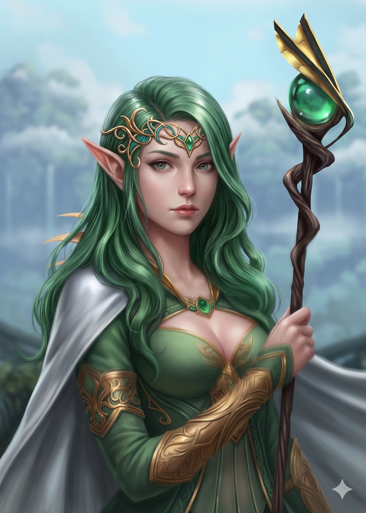

Appears in: Couch Potato Chaos, Couch Potato Crisis
Profile

- Appears in: Couch Potato Chaos, Couch Potato Crisis
- Aliases: Kiwi, Princess Kiwi, Princess Kiwistafel (also spelled Kiwistafell in some documents)
- Cross-book continuity: Central character in both books.
- Personality: Kiwi carries herself with the composure and authority expected of a crown princess, but beneath the royal bearing is a fierce combat pragmatist and a deeply loyal friend. She is quick-witted, analytical, and tends to assess situations in strategic terms — even critiquing encounter design for narrative coherence while fleeing for her life. Her sense of humor is dry and opinionated. In Chaos she is confident and assertive, comfortable commanding a battlefield and mentoring newer adventurers like Tasha. Crisis strips away much of that composure: subjected to repeated death and resurrection in the Grey Room, her personality is progressively damaged by Penfold’s conditioning. She resists at first — using her administration access to send distress messages, training Fin and Mara in survival skills, and leveraging every system she can reach — but the accumulated trauma of being poisoned, killed, and resurrected erodes her resistance. Under Murderjoy’s influence she eventually voices the enemy’s philosophy back at her friends (“The only way to overcome our enemy is to become like them”), a line that shows how thoroughly she has been reshaped. Even then, a trace of her original self lingers beneath the conditioning, and the Orb of Life ultimately helps break the enchantment and restore her.
- Backstory: Born the crown princess of Questgivria to King Iolo and Queen Lyra (also called Kiwano), Kiwi was raised in the royal court at [Brightwind Keep](./location-brightwind-keep.html) with all the education, privilege, and political expectation of the elven throne. As part of an unusual cross-cultural arrangement, she was sent to the dark-elven city-state of Gothmër to study magic under [Magus Savik D](./character-magus-savik-d.html)'hagma, the high magus. Savik, a dark elf, deeply resented being assigned to teach a high-elven student, and the friction between them shaped Kiwi’s magical education. She learned mana purification through dark-elven chakra-point techniques — a method taught to dark-elven children from a young age and one she struggles with because her high-elven physiology channels mana differently. Despite the difficulty, this cross-tradition training gave her an unusually diverse spell repertoire. She grew up alongside [Prince Hermes](./character-prince-hermes.html) and [Sir Slimon](./character-sir-slimon.html); Hermes was a childhood friend raised partly in Questgivria after his father Dourmal tried to kill him, and Slimon became both her oldest companion and, eventually, her romantic partner. By the time of Chaos she is a powerful offensive mage with aspirations of unlocking the Sage class, which combines offensive and defensive magic.
- Significant story events:
- Chapter 12 — Ninja Attack (Chaos): Kidnapped by ninja operatives from the Hidden Smog village aligned with Queen Murderjoy. Fights back with Explosion Array, Tempest, Tétha Lishkâ, and Fraisha á Krâllinísh, demonstrating her full combat repertoire during the chase.
- Chapter 17–18 — Princess Rescue (Chaos): Rescued from captivity by Tasha, Ari, Pan, Slimon, and Hermes. The rescue involves a pitched battle against a Ginormasaurus rex, during which Kiwi uses Vine/Bind spells to create distance and contributes directly to the fight even while imperiled.
- Chapter 20 — [Brightwind Keep](./location-brightwind-keep.html) (Chaos): Present at the war council where King Iolo confirms the countdown’s meaning and launches the orb quest. Kiwi is identified as the person uniquely able to claim the Orb of Life.
- Chapter 29 — Chicken Chaser (Chaos): Side-quest interlude with Tasha recovering escaped chickens at Belly Acres farm, showing Kiwi’s more grounded and playful side away from the battlefield.
- Chapter 37–39 — Orb of Life Quest (Chaos): Crosses the Bog of Most Likely Death, ascends the Spiral Tower, and successfully claims the Orb of Life — the artifact that powers the global save-point network. This cements her transformation from recurring rescue target into an indispensable orb bearer.
- Epilogue (Chaos): Murderjoy charms Tasha using Greater Charm Person, abducts Kiwi, and kills Tasha’s third life. Kiwi is taken into Zhakara as a prisoner.
- Previously on… / Chapters 1–2 (Crisis): Awakens bound, collared, and transported as a prisoner into Zhakara. Tasha reports the charm and kidnapping to the Questgiver court, and the search begins.
- Chapter 6–7 (Crisis): Trains Fin and Mara to survive in the wilderness as fugitives, demonstrating her leadership and teaching instincts even as a captive.
- Chapter 12 — McBreakfast Sandwiches (Crisis): Escapes pursuit by mechs alongside Fin and Mara. Discovers an abandoned town, purchases it through the town ownership interface, and renames it McBreakfast Sandwiches — appointing Mara as assistant administrator. Sends distress messages through the administration system seeking rescue. Shortly after, Gelkorus locates and abducts her again.
- Chapter 13 — The Grey Room (Crisis): Imprisoned in the Grey Room, a sealed execution cell where Penfold repeatedly kills her with poison gas and resurrects her. Each cycle produces personality-stat variance that Penfold maps and exploits, seeking a version of Kiwi whose personality can be more easily manipulated. She resists using Resist Sleep and fire spells against the gas but is eventually overcome.
- Chapters 18–24 (Crisis): Kiwi’s captivity deepens. She realizes physical escape is impossible and pivots to communication — using every channel available to reach her allies. She increasingly understands that her captors are trying to reshape her personality. She is pressured into collaboration by Murderjoy’s arguments about history, war, and inevitability.
- Chapter 29 (Crisis): Kiwi, now aligned with Murderjoy after conditioning, serves as adviser and symbol of ideological victory — a living demonstration that even the crown princess of Questgivria has been “converted.”
- Chapter 30 — The End of Zhakara (Crisis): The climactic battle. Tasha’s group assaults the war camp. The charm on Kiwi is broken using the Orb of Life, Murderjoy is killed by Captain K’her, and Zhakara collapses as a kingdom.
- Epilogue (Crisis): Kiwi reunites with her parents at Brightwind. Tasha reconciles with her and discusses the theory that elemental orbs create or shape villains. In a dark final reveal, Penfold survives by transplanting his brain into Kiwi’s dead body and seizing the Orb of Life — leaving a major threat unresolved.
- Notable Quotes:
“Tempest is my favorite spell, but the casting sequence is elaborate and I need room to move. It’s not practical in confined spaces.” — Chapter 12, Ninja Attack (Chaos). Kiwi explains the tradeoffs of her most powerful spell during combat. “Thematic consistency is critical to a coherent narrative!” — McBreakfast Sandwiches (Crisis). Kiwi objects to absurd encounter design even while fleeing for her life. “There are things we can do, and things we cannot do. You can protect the kids.” — McBreakfast Sandwiches (Crisis). Kiwi tells [Trista Twinklebottom](./character-trista-twinklebottom.html) to prioritize Fin and Mara rather than attempt an impossible rescue of her. “The only way to overcome our enemy is to become like them.” — Chapter 30, The End of Zhakara (Crisis). Kiwi, under Murderjoy’s influence after conditioning, voices the enemy’s philosophy back at her friends.
- Relationships:
- [King [Iolo Questgiver](./character-iolo-questgiver.html)](./character-iolo-questgiver.html): Father. Their relationship is loving but shaped by the weight of royal duty and the orb quest he launched.
- Queen Lyra (Kiwi’s mother, also called Kiwano): Mother. Little direct interaction is shown, but Kiwi’s reunion with both parents in the Crisis epilogue is emotional.
- [Sir Slimon](./character-sir-slimon.html): Romantic partner and fiancé. Kiwi explicitly says she has fallen in love with Slimon and addresses him as “my love.” Their relationship spans both books, from battlefield companionship to declared engagement.
- [Prince Hermes](./character-prince-hermes.html): Childhood friend. Hermes was raised partly in Questgivria, and he, Kiwi, and Slimon form a tight-knit trio that bridges human-dwarven-elven politics.
- [Tasha Singleton](./character-tasha-singleton.html): Close friend and ally. Tasha is driven through most of Crisis by guilt over Kiwi’s abduction (having been charmed into delivering her to Murderjoy). Their reconciliation in the Crisis epilogue is a key emotional beat.
- [Pan / Panella Branford](./character-pan-panella-branford.html): Friend. Connected through the core heroic fellowship.
- [Ari / Aralogos Branford](./character-ari-aralogos-branford.html): Ally. The party’s frontline leader during the orb quest.
- [Magus Savik D](./character-magus-savik-d.html)'hagma: Magic instructor. Their teacher-student relationship was strained by racial tension — he resented teaching a high elf, and she struggled with his dark-elven chakra techniques.
- [Queen [Aralynn Murderjoy](./character-queen-aralynn-murderjoy.html)](./character-queen-aralynn-murderjoy.html): Primary antagonist and kidnapper. Murderjoy targets Kiwi repeatedly across both books, ultimately conditioning her into ideological alignment in Crisis.
- [Doctor Theodore Penfold](./character-doctor-theodore-penfold.html): Tormentor. Penfold kills and resurrects Kiwi repeatedly in the Grey Room, mapping her personality to find a controllable version.
- Fingaerion (Fin) and Mara: Fellow captives in Zhakara whom Kiwi trains and protects. She appoints Mara assistant administrator of McBreakfast Sandwiches.
- [Captain K’her Noálin](./character-captain-k-her-no-lin.html): Complex. Former enemy who held the Orb of Air; later becomes essential to her rescue and ultimately kills Murderjoy.
- References: Couch Potato Chaos: Chapter 12 - Ninja Attack, Chapter 17 - Honor Among Thieves, Chapter 18 - Princess Rescue, Chapter 20 - [Brightwind Keep](./location-brightwind-keep.html), Chapter 27 - [Mad Marina](./character-mad-marina.html) and the Phantom Child, Chapter 29 - Chicken Chaser, Chapter 37 - The Bog of Most Likely Death, Chapter 38 - The Spiral Tower, Chapter 39 - Fire and Life, Epilogue | Couch Potato Crisis: Absconded Princess, Beachhead, Devil’s Bargain, Epilogue, McBreakfast Sandwiches, Message in a Bottle, The End of Zhakara, The Gathering, The Grey Room